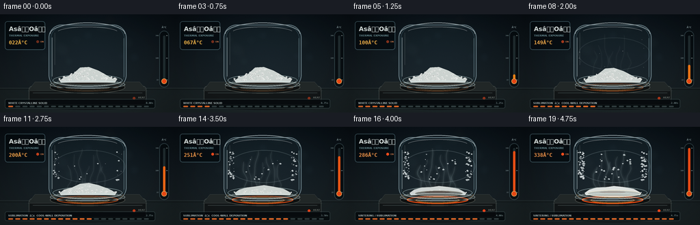
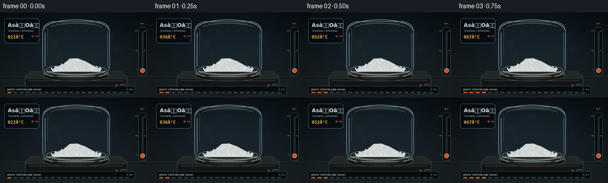

CODING AGENTS AS PIXEL WORLD MODELS
traex/GPT-5.6-Sol · phygen_120
点击播放 · 原生 RGB 像素
逐轮保存的候选
回放视频、检查图与代码变化。
每份候选均可单独播放。实际图片检查记录在下方工具轨迹中。
候选 01播放与检查图
点击播放 · 原生 RGB 像素


展开代码变化
--- 上一保存版本
+++ 本次保存版本
@@ -0,0 +1,302 @@
+from pathlib import Path
+import math
+import numpy as np
+from PIL import Image, ImageDraw, ImageFont, ImageFilter
+import artifact_io
+
+# Deterministic procedural rendering; no external assets or models.
+W, H, N = 256, 144, 20
+S = 4
+WS, HS = W*S, H*S
+rng = np.random.default_rng(120)
+
+FONT_REG = "/usr/share/fonts/truetype/dejavu/DejaVuSans.ttf"
+FONT_BOLD = "/usr/share/fonts/truetype/dejavu/DejaVuSans-Bold.ttf"
+FONT_MONO = "/usr/share/fonts/truetype/dejavu/DejaVuSansMono-Bold.ttf"
+
+def font(px, bold=False, mono=False):
+ path = FONT_MONO if mono else (FONT_BOLD if bold else FONT_REG)
+ return ImageFont.truetype(path, max(4, int(px*S)))
+
+def smoothstep(a, b, x):
+ z = min(1.0, max(0.0, (x-a)/(b-a)))
+ return z*z*(3-2*z)
+
+def scpts(points):
+ return [(int(x*S), int(y*S)) for x,y in points]
+
+def rect(box):
+ return tuple(int(v*S) for v in box)
+
+def text(draw, xy, s, size, fill, bold=False, mono=False, anchor=None, stroke=0, stroke_fill=None):
+ draw.text((int(xy[0]*S), int(xy[1]*S)), s, font=font(size,bold,mono), fill=fill,
+ anchor=anchor, stroke_width=int(stroke*S), stroke_fill=stroke_fill)
+
+def layer():
+ return Image.new("RGBA", (WS,HS), (0,0,0,0))
+
+def composite(base, over):
+ return Image.alpha_composite(base, over)
+
+# Fixed source-crystal geometry.
+source_grains=[]
+for i in range(92):
+ x=float(rng.normal(128, 20))
+ x=max(87,min(170,x))
+ envelope=max(0.0, 1.0-abs(x-128)/46)
+ y=97-float(rng.random())*(5+14*envelope)
+ r=float(rng.uniform(0.7,2.25))
+ phase=float(rng.random())
+ source_grains.append((x,y,r,phase))
+
+# Stable crystal nuclei on cooler vessel wall.
+deposits=[]
+for i in range(115):
+ side = -1 if rng.random()<.5 else 1
+ # Mostly hug the cool walls, with a sparse central frost band.
+ if rng.random()<.78:
+ x = (86 if side<0 else 170) + side*float(rng.uniform(-1, 8))
+ else:
+ x=float(rng.uniform(101,156))
+ y=float(rng.uniform(37,78))
+ size=float(rng.uniform(.55,1.8))
+ appear=float(rng.uniform(.35,.96))
+ angle=float(rng.uniform(0, math.pi))
+ deposits.append((x,y,size,appear,angle))
+
+# Background dust motes / laboratory bokeh.
+bokeh=[]
+for i in range(16):
+ bokeh.append((float(rng.uniform(3,253)),float(rng.uniform(8,85)),float(rng.uniform(2,10)),
+ tuple(int(v) for v in rng.choice([[62,100,119],[88,116,112],[92,76,54]],1)[0])))
+
+def polygon_crystal(draw, cx, cy, r, ang, fill, outline=None, width=1):
+ pts=[]
+ # Irregular faceted six-sided grain.
+ for j in range(6):
+ a=ang+j*math.pi/3
+ rr=r*(1.0 + .16*math.sin(j*3.1+cx))
+ pts.append((cx+math.cos(a)*rr,cy+math.sin(a)*rr*.72))
+ draw.polygon(scpts(pts),fill=fill)
+ if outline:
+ draw.line(scpts(pts+[pts[0]]),fill=outline,width=max(1,int(width*S)),joint="curve")
+
+def render_frame(k):
+ t=k/(N-1)
+ heat=smoothstep(.03,1,t)
+ sub=smoothstep(.28,.86,t)
+ melt=smoothstep(.78,1.0,t)
+ temp=round(22+(338-22)*(t**1.05))
+
+ # Deep blue-charcoal laboratory background with fine sensor-like noise.
+ yy=np.arange(HS)[:,None]/S
+ xx=np.arange(WS)[None,:]/S
+ top=np.array([7,13,18.],dtype=float)
+ bottom=np.array([25,32,35.],dtype=float)
+ frac=(yy/H)[...,None]
+ arr=np.empty((HS,WS,3),dtype=float)
+ arr[:]=top+(bottom-top)*frac
+ # faint pool of cool light around the vessel
+ glow=np.exp(-(((xx-130)/100)**2+((yy-59)/74)**2))[...,None]
+ arr += glow*np.array([5,9,11])[None,None,:]
+ # bench area
+ bench=yy>=108
+ arr=np.where(bench[...,None], arr*np.array([.72,.78,.79])+np.array([8,9,8]), arr)
+ noise=np.random.default_rng(800+k).normal(0,.8,(HS,WS,1))
+ arr=np.clip(arr+noise,0,255).astype(np.uint8)
+ base=Image.fromarray(arr,"RGB").convert("RGBA")
+
+ # Soft bokeh in background.
+ bl=layer(); bd=ImageDraw.Draw(bl,"RGBA")
+ for i,(bx,by,br,bc) in enumerate(bokeh):
+ alpha=10+int(5*math.sin(i*2.7))
+ bd.ellipse(rect((bx-br,by-br,bx+br,by+br)),fill=(*bc,alpha))
+ bl=bl.filter(ImageFilter.GaussianBlur(3.2*S))
+ base=composite(base,bl)
+
+ # Wall seams and bench reflection.
+ geom=layer(); d=ImageDraw.Draw(geom,"RGBA")
+ d.line(scpts([(0,108),(256,108)]),fill=(106,122,121,38),width=S)
+ d.line(scpts([(0,110),(256,110)]),fill=(0,0,0,70),width=S)
+ d.ellipse(rect((43,118,214,140)),fill=(0,0,0,85))
+ base=composite(base,geom)
+
+ # Thermal bloom below the sample, progressively orange-red.
+ thermal=layer(); td=ImageDraw.Draw(thermal,"RGBA")
+ for rad,alpha in [(38,24),(27,38),(18,58)]:
+ td.ellipse(rect((128-rad,95-rad*.20,128+rad,116+rad*.20)),
+ fill=(255,88+int(45*(1-heat)),20,int(alpha*heat)))
+ thermal=thermal.filter(ImageFilter.GaussianBlur(7*S))
+ base=composite(base,thermal)
+
+ # Hot plate: top deck and body.
+ plate=layer(); d=ImageDraw.Draw(plate,"RGBA")
+ d.rounded_rectangle(rect((42,105,214,133)),radius=5*S,fill=(18,22,23,255),outline=(64,72,71,230),width=S)
+ d.polygon(scpts([(51,99),(204,99),(215,112),(41,112)]),fill=(33,39,39,255),outline=(88,97,94,220))
+ d.ellipse(rect((73,98,183,116)),fill=(14,17,17,255),outline=(76,79,74,230),width=S)
+ # concentric glowing heater elements
+ ringcol=(255,78+int(28*(1-heat)),15,int(45+185*heat))
+ d.ellipse(rect((83,101,173,113)),outline=ringcol,width=max(S,int((.8+1.4*heat)*S)))
+ d.ellipse(rect((96,103,160,112)),outline=(255,151,44,int(25+125*heat)),width=S)
+ # front edge, vent lines, power LED
+ d.line(scpts([(48,115),(208,115)]),fill=(105,112,107,80),width=S)
+ for x0 in range(74,150,10):
+ d.line(scpts([(x0,125),(x0+6,125)]),fill=(3,5,5,175),width=S)
+ d.ellipse(rect((194,121,198,125)),fill=(255,68,22,120+int(135*heat)))
+ text(d,(202,122),"HEAT",3.7,(140,148,141,170),bold=True,anchor="lm")
+ base=composite(base,plate)
+
+ # Vessel interior shadow/tint first.
+ vessel_back=layer(); vd=ImageDraw.Draw(vessel_back,"RGBA")
+ vd.rounded_rectangle(rect((72,16,184,107)),radius=18*S,fill=(90,135,151,13))
+ vd.ellipse(rect((72,89,184,108)),fill=(5,10,12,55))
+ base=composite(base,vessel_back)
+
+ # Cool-wall frost / arsenic trioxide redeposition. It should appear behind vapor/highlights.
+ frost=layer(); fd=ImageDraw.Draw(frost,"RGBA")
+ for i,(cx,cy,r,appear,ang) in enumerate(deposits):
+ prog=smoothstep(appear,min(1,appear+.16),t)
+ if prog<=0: continue
+ rr=r*(.25+.75*prog)
+ a=int(55+145*prog)
+ polygon_crystal(fd,cx,cy,rr,ang,(225,237,238,a),(255,255,255,min(245,a+35)),.28)
+ # short faceted branch for larger late deposits
+ if rr>1.15 and prog>.72:
+ fd.line(scpts([(cx,cy),(cx+math.cos(ang)*rr*1.65,cy+math.sin(ang)*rr)]),
+ fill=(239,250,250,int(125*prog)),width=max(1,int(.35*S)))
+ # diffuse whitening behind the crystal band late in the run
+ if sub>0:
+ fd.ellipse(rect((78,34,183,82)),outline=(215,236,240,int(18+28*sub)),width=max(1,int(1.1*S)))
+ base=composite(base,frost)
+
+ # Vapor wisps. Curves rise and slowly drift, with stronger but still translucent trails.
+ vapor_blur=layer(); vb=ImageDraw.Draw(vapor_blur,"RGBA")
+ vapor_crisp=layer(); vc=ImageDraw.Draw(vapor_crisp,"RGBA")
+ if sub>0:
+ for j in range(7):
+ strength=sub * (0.62+0.38*math.sin((j+1)*1.7)**2)
+ phase=k*.43+j*1.21
+ x0=102+j*8.3
+ pts=[]
+ for q in range(30):
+ u=q/29
+ y0=91-u*(32+11*(j%3))-((k*1.7+j*5)%8)*u
+ x=x0 + math.sin(u*6.0+phase)*2.7 + math.sin(u*12.5-phase*.5)*.8
+ pts.append((x,y0))
+ col=(221,240,241,int(27+57*strength))
+ vb.line(scpts(pts),fill=(204,234,238,int(28+74*strength)),width=max(S,int((1.8+1.3*strength)*S)))
+ vc.line(scpts(pts),fill=col,width=max(1,int(.42*S)))
+ vapor_blur=vapor_blur.filter(ImageFilter.GaussianBlur(2.2*S))
+ base=composite(base,vapor_blur)
+ base=composite(base,vapor_crisp)
+
+ # The shallow quartz sample boat.
+ sample=layer(); sd=ImageDraw.Draw(sample,"RGBA")
+ sd.ellipse(rect((77,88,179,105)),fill=(120,154,159,26),outline=(197,221,222,130),width=S)
+ sd.arc(rect((79,91,177,106)),0,180,fill=(224,239,238,165),width=S)
+ sd.ellipse(rect((84,94,172,103)),fill=(12,16,16,75),outline=(157,177,175,85),width=S)
+
+ # Solid source mound loses mass through sublimation; at high temperature the remainder sinters/melts.
+ remaining=1-.72*sub
+ mound_h=4+15*remaining
+ # soft under-mass
+ mound_poly=[(87,97),(94,92),(105,89),(117,97-mound_h),(130,94-mound_h*.88),(144,93-mound_h*.55),(159,91),(170,97),(168,100),(89,100)]
+ sd.polygon(scpts(mound_poly),fill=(211+int(18*melt),218+int(15*melt),215+int(16*melt),245),
+ outline=(247,249,244,220))
+ # Faceted persistent source grains, removed in a deterministic order as mass falls.
+ for idx,(gx,gy,gr,ph) in enumerate(source_grains):
+ keep_threshold=(idx+.5)/len(source_grains)
+ if keep_threshold > remaining: continue
+ # squeeze grains toward the floor as mound subsides
+ local_env=max(0,1-abs(gx-128)/47)
+ top=97-(4+15*remaining)*local_env
+ yy0=max(top, 97-(97-gy)*remaining)
+ rr=gr*(.72+.28*remaining)*(1-.25*melt)
+ shade=int(210+29*ph)
+ polygon_crystal(sd,gx,yy0,rr,ph*math.pi,(shade,shade+3,shade+1,250),(250,252,247,230),.23)
+ # one dark facet gives dimensional crystal texture
+ if rr>1.2:
+ sd.line(scpts([(gx-rr*.55,yy0),(gx,yy0+rr*.34)]),fill=(157,169,167,115),width=max(1,int(.25*S)))
+ # glossy molten/sintered residue from the melting point onward
+ if melt>0:
+ sd.ellipse(rect((96-melt*5,94-melt*1.5,164+melt*5,102+melt)),
+ fill=(218,226,219,int(80+130*melt)),outline=(255,250,230,int(120+115*melt)),width=S)
+ sd.ellipse(rect((109,94.3,147,97.4)),fill=(255,255,246,int(35+115*melt)))
+ base=composite(base,sample)
+
+ # Front glass contour and refraction highlights.
+ glass=layer(); gd=ImageDraw.Draw(glass,"RGBA")
+ # sealed rounded chamber with thick lip and base
+ gd.rounded_rectangle(rect((71,15,185,108)),radius=19*S,outline=(188,221,232,118),width=max(S,int(1.25*S)))
+ gd.rounded_rectangle(rect((74,18,182,106)),radius=17*S,outline=(103,155,172,61),width=S)
+ gd.arc(rect((73,12,183,45)),180,360,fill=(232,247,249,155),width=S)
+ gd.line(scpts([(76,34),(76,91)]),fill=(225,244,248,112),width=max(S,int(1.1*S)))
+ gd.line(scpts([(80,27),(80,74)]),fill=(255,255,255,55),width=max(1,int(.65*S)))
+ gd.line(scpts([(181,35),(181,92)]),fill=(185,224,233,80),width=S)
+ gd.ellipse(rect((73,97,183,109)),outline=(216,237,238,139),width=S)
+ gd.arc(rect((83,18,173,35)),196,344,fill=(255,255,255,78),width=S)
+ # faint warm lower reflection
+ gd.arc(rect((75,85,181,111)),4,176,fill=(255,160,67,int(20+65*heat)),width=max(S,int(1.2*S)))
+ base=composite(base,glass)
+
+ # UI overlays: restrained, crisp scientific readout.
+ ui=layer(); ud=ImageDraw.Draw(ui,"RGBA")
+ ud.rounded_rectangle(rect((7,10,66,52)),radius=4*S,fill=(4,10,14,202),outline=(96,134,145,130),width=S)
+ text(ud,(13,16),"AsâOâ",9,(230,239,237,255),bold=True)
+ text(ud,(13,29),"THERMAL EXPOSURE",3.8,(119,161,168,235),bold=True)
+ text(ud,(13,37),f"{temp:03d}°C",7.7,(255,156+int(37*(1-heat)),77,255),mono=True)
+ # tiny status lamp
+ ud.ellipse(rect((53,38,57,42)),fill=(255,78,28,100+int(155*heat)))
+ text(ud,(59,40),"ON",3.1,(230,136,83,220),bold=True,anchor="lm")
+
+ # Right-side vertical temperature scale.
+ ud.rounded_rectangle(rect((233,24,247,107)),radius=7*S,fill=(3,8,11,162),outline=(89,118,124,110),width=S)
+ ud.rounded_rectangle(rect((238.5,31,241.8,98)),radius=2*S,fill=(31,44,47,255))
+ bar_top=98-67*heat
+ ud.rounded_rectangle(rect((238.5,bar_top,241.8,98)),radius=2*S,
+ fill=(255,80+int(73*(1-heat)),22,245))
+ ud.ellipse(rect((236.2,94,244.2,102)),fill=(255,76,20,245),outline=(255,182,91,220),width=S)
+ for val,y0 in [("340",31),("180",64),("22",96)]:
+ ud.line(scpts([(243, y0),(245,y0)]),fill=(187,204,203,150),width=S)
+ text(ud,(232,y0),val,2.7,(147,169,171,200),mono=True,anchor="rm")
+ text(ud,(240,19),"°C",3.5,(167,191,193,220),bold=True,anchor="mm")
+
+ # Timeline and changing phase annotation.
+ if t<.27:
+ phase="WHITE CRYSTALLINE SOLID"
+ elif t<.76:
+ phase="SUBLIMATION ⢠COOL-WALL DEPOSITION"
+ else:
+ phase="SINTERING / SUBLIMATION"
+ ud.rounded_rectangle(rect((7,124,227,138)),radius=3*S,fill=(3,8,11,195),outline=(79,101,104,90),width=S)
+ text(ud,(12,128),phase,3.8,(203,218,216,235),bold=True)
+ # progress track with 20 discrete timelapse ticks
+ for q in range(20):
+ x0=12+q*10.45
+ col=(255,117,44,230) if q<=k else (74,91,92,145)
+ ud.rounded_rectangle(rect((x0,134,x0+7.2,136)),radius=S,fill=col)
+ text(ud,(224,128),f"{k/4:0.2f}s",3.6,(141,164,166,220),mono=True,anchor="ra")
+ base=composite(base,ui)
+
+ # Overall cinematic vignette.
+ va=np.zeros((HS,WS),dtype=np.uint8)
+ dx=(xx-128)/150
+ dy=(yy-72)/98
+ vig=np.clip((dx*dx+dy*dy-.34)*58,0,55).astype(np.uint8)
+ va[:]=vig
+ vign=Image.new("RGBA",(WS,HS),(0,0,0,0)); vign.putalpha(Image.fromarray(va,"L"))
+ base=composite(base,vign)
+
+ # Downsample gives clean subpixel anti-aliasing.
+ out=base.convert("RGB").resize((W,H),Image.Resampling.LANCZOS)
+ return np.asarray(out,dtype=np.uint8)
+
+
+def main():
+ frames=np.stack([render_frame(k) for k in range(N)],axis=0)
+ assert frames.shape==(20,144,256,3) and frames.dtype==np.uint8
+ artifact_io.save(frames,Path(__file__).resolve().parent)
+ print("saved",frames.shape,frames.dtype,"range",int(frames.min()),int(frames.max()))
+
+if __name__=="__main__":
+ main()
可观测工具轨迹
实际执行的命令与返回图片。
命令 1exit 0
/bin/bash -lc "cat prompt.txt && printf '\\n--- GENERATION_RULES.md ---\\n' && cat GENERATION_RULES.md && printf '\\n--- task_spec.json ---\\n' && cat task_spec.json"
命令 2exit 0
/bin/bash -lc "find . -maxdepth 2 -type f -printf '%p\\n' | sort && printf '\\n--- tools ---\\n' && command -v ffmpeg || true && command -v blender || true && command -v python3 || true"
命令 3exit 0
/bin/bash -lc 'cat artifact_io.py'
命令 4exit 0
/bin/bash -lc "cat > generate.py <<'PY'
from pathlib import Path
import math
import numpy as np
from PIL import Image, ImageDraw, ImageFont, ImageFilter
import artifact_io
# Deterministic procedural rendering; no external assets or models.
W, H, N = 256, 144, 20
S = 4
WS, HS = W*S, H*S
rng = np.random.default_rng(120)
FONT_REG = \"/usr/share/fonts/truetype/dejavu/DejaVuSans.ttf\"
FONT_BOLD = \"/usr/share/fonts/truetype/dejavu/DejaVuSans-Bold.ttf\"
FONT_MONO = \"/usr/share/fonts/truetype/dejavu/DejaVuSansMono-Bold.ttf\"
def font(px, bold=False, mono=False):
path = FONT_MONO if mono else (FONT_BOLD if bold else FONT_REG)
return ImageFont.truetype(path, max(4, int(px*S)))
def smoothstep(a, b, x):
z = min(1.0, max(0.0, (x-a)/(b-a)))
return z*z*(3-2*z)
def scpts(points):
return [(int(x*S), int(y*S)) for x,y in points]
def rect(box):
return tuple(int(v*S) for v in box)
def text(draw, xy, s, size, fill, bold=False, mono=False, anchor=None, stroke=0, stroke_fill=None):
draw.text((int(xy[0]*S), int(xy[1]*S)), s, font=font(size,bold,mono), fill=fill,
anchor=anchor, stroke_width=int(stroke*S), stroke_fill=stroke_fill)
def layer():
return Image.new(\"RGBA\", (WS,HS), (0,0,0,0))
def composite(base, over):
return Image.alpha_composite(base, over)
# Fixed source-crystal geometry.
source_grains=[]
for i in range(92):
x=float(rng.normal(128, 20))
x=max(87,min(170,x))
envelope=max(0.0, 1.0-abs(x-128)/46)
y=97-float(rng.random())*(5+14*envelope)
r=float(rng.uniform(0.7,2.25))
phase=float(rng.random())
source_grains.append((x,y,r,phase))
# Stable crystal nuclei on cooler vessel wall.
deposits=[]
for i in range(115):
side = -1 if rng.random()<.5 else 1
# Mostly hug the cool walls, with a sparse central frost band.
if rng.random()<.78:
x = (86 if side<0 else 170) + side*float(rng.uniform(-1, 8))
else:
x=float(rng.uniform(101,156))
y=float(rng.uniform(37,78))
size=float(rng.uniform(.55,1.8))
appear=float(rng.uniform(.35,.96))
angle=float(rng.uniform(0, math.pi))
deposits.append((x,y,size,appear,angle))
# Background dust motes / laboratory bokeh.
bokeh=[]
for i in range(16):
bokeh.append((float(rng.uniform(3,253)),float(rng.uniform(8,85)),float(rng.uniform(2,10)),
tuple(int(v) for v in rng.choice([[62,100,119],[88,116,112],[92,76,54]],1)[0])))
def polygon_crystal(draw, cx, cy, r, ang, fill, outline=None, width=1):
pts=[]
# Irregular faceted six-sided grain.
for j in range(6):
a=ang+j*math.pi/3
rr=r*(1.0 + .16*math.sin(j*3.1+cx))
pts.append((cx+math.cos(a)*rr,cy+math.sin(a)*rr*.72))
draw.polygon(scpts(pts),fill=fill)
if outline:
draw.line(scpts(pts+[pts[0]]),fill=outline,width=max(1,int(width*S)),joint=\"curve\")
def render_frame(k):
t=k/(N-1)
heat=smoothstep(.03,1,t)
sub=smoothstep(.28,.86,t)
melt=smoothstep(.78,1.0,t)
temp=round(22+(338-22)*(t**1.05))
# Deep blue-charcoal laboratory background with fine sensor-like noise.
yy=np.arange(HS)[:,None]/S
xx=np.arange(WS)[None,:]/S
top=np.array([7,13,18.],dtype=float)
bottom=np.array([25,32,35.],dtype=float)
frac=(yy/H)[...,None]
arr=np.empty((HS,WS,3),dtype=float)
arr[:]=top+(bottom-top)*frac
# faint pool of cool light around the vessel
glow=np.exp(-(((xx-130)/100)**2+((yy-59)/74)**2))[...,None]
arr += glow*np.array([5,9,11])[None,None,:]
# bench area
bench=yy>=108
arr=np.where(bench[...,None], arr*np.array([.72,.78,.79])+np.array([8,9,8]), arr)
noise=np.random.default_rng(800+k).normal(0,.8,(HS,WS,1))
arr=np.clip(arr+noise,0,255).astype(np.uint8)
base=Image.fromarray(arr,\"RGB\").convert(\"RGBA\")
# Soft bokeh in background.
bl=layer(); bd=ImageDraw.Draw(bl,\"RGBA\")
for i,(bx,by,br,bc) in enumerate(bokeh):
alpha=10+int(5*math.sin(i*2.7))
bd.ellipse(rect((bx-br,by-br,bx+br,by+br)),fill=(*bc,alpha))
bl=bl.filter(ImageFilter.GaussianBlur(3.2*S))
base=composite(base,bl)
# Wall seams and bench reflection.
geom=layer(); d=ImageDraw.Draw(geom,\"RGBA\")
d.line(scpts([(0,108),(256,108)]),fill=(106,122,121,38),width=S)
d.line(scpts([(0,110),(256,110)]),fill=(0,0,0,70),width=S)
d.ellipse(rect((43,118,214,140)),fill=(0,0,0,85))
base=composite(base,geom)
# Thermal bloom below the sample, progressively orange-red.
thermal=layer(); td=ImageDraw.Draw(thermal,\"RGBA\")
for rad,alpha in [(38,24),(27,38),(18,58)]:
td.ellipse(rect((128-rad,95-rad*.20,128+rad,116+rad*.20)),
fill=(255,88+int(45*(1-heat)),20,int(alpha*heat)))
thermal=thermal.filter(ImageFilter.GaussianBlur(7*S))
base=composite(base,thermal)
# Hot plate: top deck and body.
plate=layer(); d=ImageDraw.Draw(plate,\"RGBA\")
d.rounded_rectangle(rect((42,105,214,133)),radius=5*S,fill=(18,22,23,255),outline=(64,72,71,230),width=S)
d.polygon(scpts([(51,99),(204,99),(215,112),(41,112)]),fill=(33,39,39,255),outline=(88,97,94,220))
d.ellipse(rect((73,98,183,116)),fill=(14,17,17,255),outline=(76,79,74,230),width=S)
# concentric glowing heater elements
ringcol=(255,78+int(28*(1-heat)),15,int(45+185*heat))
d.ellipse(rect((83,101,173,113)),outline=ringcol,width=max(S,int((.8+1.4*heat)*S)))
d.ellipse(rect((96,103,160,112)),outline=(255,151,44,int(25+125*heat)),width=S)
# front edge, vent lines, power LED
d.line(scpts([(48,115),(208,115)]),fill=(105,112,107,80),width=S)
for x0 in range(74,150,10):
d.line(scpts([(x0,125),(x0+6,125)]),fill=(3,5,5,175),width=S)
d.ellipse(rect((194,121,198,125)),fill=(255,68,22,120+int(135*heat)))
text(d,(202,122),\"HEAT\",3.7,(140,148,141,170),bold=True,anchor=\"lm\")
base=composite(base,plate)
# Vessel interior shadow/tint first.
vessel_back=layer(); vd=ImageDraw.Draw(vessel_back,\"RGBA\")
vd.rounded_rectangle(rect((72,16,184,107)),radius=18*S,fill=(90,135,151,13))
vd.ellipse(rect((72,89,184,108)),fill=(5,10,12,55))
base=composite(base,vessel_back)
# Cool-wall frost / arsenic trioxide redeposition. It should appear behind vapor/highlights.
frost=layer(); fd=ImageDraw.Draw(frost,\"RGBA\")
for i,(cx,cy,r,appear,ang) in enumerate(deposits):
prog=smoothstep(appear,min(1,appear+.16),t)
if prog<=0: continue
rr=r*(.25+.75*prog)
a=int(55+145*prog)
polygon_crystal(fd,cx,cy,rr,ang,(225,237,238,a),(255,255,255,min(245,a+35)),.28)
# short faceted branch for larger late deposits
if rr>1.15 and prog>.72:
fd.line(scpts([(cx,cy),(cx+math.cos(ang)*rr*1.65,cy+math.sin(ang)*rr)]),
fill=(239,250,250,int(125*prog)),width=max(1,int(.35*S)))
# diffuse whitening behind the crystal band late in the run
if sub>0:
fd.ellipse(rect((78,34,183,82)),outline=(215,236,240,int(18+28*sub)),width=max(1,int(1.1*S)))
base=composite(base,frost)
# Vapor wisps. Curves rise and slowly drift, with stronger but still translucent trails.
vapor_blur=layer(); vb=ImageDraw.Draw(vapor_blur,\"RGBA\")
vapor_crisp=layer(); vc=ImageDraw.Draw(vapor_crisp,\"RGBA\")
if sub>0:
for j in range(7):
strength=sub * (0.62+0.38*math.sin((j+1)*1.7)**2)
phase=k*.43+j*1.21
x0=102+j*8.3
pts=[]
for q in range(30):
u=q/29
y0=91-u*(32+11*(j%3))-((k*1.7+j*5)%8)*u
x=x0 + math.sin(u*6.0+phase)*2.7 + math.sin(u*12.5-phase*.5)*.8
pts.append((x,y0))
col=(221,240,241,int(27+57*strength))
vb.line(scpts(pts),fill=(204,234,238,int(28+74*strength)),width=max(S,int((1.8+1.3*strength)*S)))
vc.line(scpts(pts),fill=col,width=max(1,int(.42*S)))
vapor_blur=vapor_blur.filter(ImageFilter.GaussianBlur(2.2*S))
base=composite(base,vapor_blur)
base=composite(base,vapor_crisp)
# The shallow quartz sample boat.
sample=layer(); sd=ImageDraw.Draw(sample,\"RGBA\")
sd.ellipse(rect((77,88,179,105)),fill=(120,154,159,26),outline=(197,221,222,130),width=S)
sd.arc(rect((79,91,177,106)),0,180,fill=(224,239,238,165),width=S)
sd.ellipse(rect((84,94,172,103)),fill=(12,16,16,75),outline=(157,177,175,85),width=S)
# Solid source mound loses mass through sublimation; at high temperature the remainder sinters/melts.
remaining=1-.72*sub
mound_h=4+15*remaining
# soft under-mass
mound_poly=[(87,97),(94,92),(105,89),(117,97-mound_h),(130,94-mound_h*.88),(144,93-mound_h*.55),(159,91),(170,97),(168,100),(89,100)]
sd.polygon(scpts(mound_poly),fill=(211+int(18*melt),218+int(15*melt),215+int(16*melt),245),
outline=(247,249,244,220))
# Faceted persistent source grains, removed in a deterministic order as mass falls.
for idx,(gx,gy,gr,ph) in enumerate(source_grains):
keep_threshold=(idx+.5)/len(source_grains)
if keep_threshold > remaining: continue
# squeeze grains toward the floor as mound subsides
local_env=max(0,1-abs(gx-128)/47)
top=97-(4+15*remaining)*local_env
yy0=max(top, 97-(97-gy)*remaining)
rr=gr*(.72+.28*remaining)*(1-.25*melt)
shade=int(210+29*ph)
polygon_crystal(sd,gx,yy0,rr,ph*math.pi,(shade,shade+3,shade+1,250),(250,252,247,230),.23)
# one dark facet gives dimensional crystal texture
if rr>1.2:
sd.line(scpts([(gx-rr*.55,yy0),(gx,yy0+rr*.34)]),fill=(157,169,167,115),width=max(1,int(.25*S)))
# glossy molten/sintered residue from the melting point onward
if melt>0:
sd.ellipse(rect((96-melt*5,94-melt*1.5,164+melt*5,102+melt)),
fill=(218,226,219,int(80+130*melt)),outline=(255,250,230,int(120+115*melt)),width=S)
sd.ellipse(rect((109,94.3,147,97.4)),fill=(255,255,246,int(35+115*melt)))
base=composite(base,sample)
# Front glass contour and refraction highlights.
glass=layer(); gd=ImageDraw.Draw(glass,\"RGBA\")
# sealed rounded chamber with thick lip and base
gd.rounded_rectangle(rect((71,15,185,108)),radius=19*S,outline=(188,221,232,118),width=max(S,int(1.25*S)))
gd.rounded_rectangle(rect((74,18,182,106)),radius=17*S,outline=(103,155,172,61),width=S)
gd.arc(rect((73,12,183,45)),180,360,fill=(232,247,249,155),width=S)
gd.line(scpts([(76,34),(76,91)]),fill=(225,244,248,112),width=max(S,int(1.1*S)))
gd.line(scpts([(80,27),(80,74)]),fill=(255,255,255,55),width=max(1,int(.65*S)))
gd.line(scpts([(181,35),(181,92)]),fill=(185,224,233,80),width=S)
gd.ellipse(rect((73,97,183,109)),outline=(216,237,238,139),width=S)
gd.arc(rect((83,18,173,35)),196,344,fill=(255,255,255,78),width=S)
# faint warm lower reflection
gd.arc(rect((75,85,181,111)),4,176,fill=(255,160,67,int(20+65*heat)),width=max(S,int(1.2*S)))
base=composite(base,glass)
# UI overlays: restrained, crisp scientific readout.
ui=layer(); ud=ImageDraw.Draw(ui,\"RGBA\")
ud.rounded_rectangle(rect((7,10,66,52)),radius=4*S,fill=(4,10,14,202),outline=(96,134,145,130),width=S)
text(ud,(13,16),\"AsâOâ\",9,(230,239,237,255),bold=True)
text(ud,(13,29),\"THERMAL EXPOSURE\",3.8,(119,161,168,235),bold=True)
text(ud,(13,37),f\"{temp:03d}°C\",7.7,(255,156+int(37*(1-heat)),77,255),mono=True)
# tiny status lamp
ud.ellipse(rect((53,38,57,42)),fill=(255,78,28,100+int(155*heat)))
text(ud,(59,40),\"ON\",3.1,(230,136,83,220),bold=True,anchor=\"lm\")
# Right-side vertical temperature scale.
ud.rounded_rectangle(rect((233,24,247,107)),radius=7*S,fill=(3,8,11,162),outline=(89,118,124,110),width=S)
ud.rounded_rectangle(rect((238.5,31,241.8,98)),radius=2*S,fill=(31,44,47,255))
bar_top=98-67*heat
ud.rounded_rectangle(rect((238.5,bar_top,241.8,98)),radius=2*S,
fill=(255,80+int(73*(1-heat)),22,245))
ud.ellipse(rect((236.2,94,244.2,102)),fill=(255,76,20,245),outline=(255,182,91,220),width=S)
for val,y0 in [(\"340\",31),(\"180\",64),(\"22\",96)]:
ud.line(scpts([(243, y0),(245,y0)]),fill=(187,204,203,150),width=S)
text(ud,(232,y0),val,2.7,(147,169,171,200),mono=True,anchor=\"rm\")
text(ud,(240,19),\"°C\",3.5,(167,191,193,220),bold=True,anchor=\"mm\")
# Timeline and changing phase annotation.
if t<.27:
phase=\"WHITE CRYSTALLINE SOLID\"
elif t<.76:
phase=\"SUBLIMATION ⢠COOL-WALL DEPOSITION\"
else:
phase=\"SINTERING / SUBLIMATION\"
ud.rounded_rectangle(rect((7,124,227,138)),radius=3*S,fill=(3,8,11,195),outline=(79,101,104,90),width=S)
text(ud,(12,128),phase,3.8,(203,218,216,235),bold=True)
# progress track with 20 discrete timelapse ticks
for q in range(20):
x0=12+q*10.45
col=(255,117,44,230) if q<=k else (74,91,92,145)
ud.rounded_rectangle(rect((x0,134,x0+7.2,136)),radius=S,fill=col)
text(ud,(224,128),f\"{k/4:0.2f}s\",3.6,(141,164,166,220),mono=True,anchor=\"ra\")
base=composite(base,ui)
# Overall cinematic vignette.
va=np.zeros((HS,WS),dtype=np.uint8)
dx=(xx-128)/150
dy=(yy-72)/98
vig=np.clip((dx*dx+dy*dy-.34)*58,0,55).astype(np.uint8)
va[:]=vig
vign=Image.new(\"RGBA\",(WS,HS),(0,0,0,0)); vign.putalpha(Image.fromarray(va,\"L\"))
base=composite(base,vign)
# Downsample gives clean subpixel anti-aliasing.
out=base.convert(\"RGB\").resize((W,H),Image.Resampling.LANCZOS)
return np.asarray(out,dtype=np.uint8)
def main():
frames=np.stack([render_frame(k) for k in range(N)],axis=0)
assert frames.shape==(20,144,256,3) and frames.dtype==np.uint8
artifact_io.save(frames,Path(__file__).resolve().parent)
print(\"saved\",frames.shape,frames.dtype,\"range\",int(frames.min()),int(frames.max()))
if __name__==\"__main__\":
main()
PY
python3 generate.py
ls -lh pixels.npz index.html inspection.png transition_check.png frames/00.png frames/19.png"命令 5exit 0
/bin/bash -lc "python3 - <<'PY'
from pathlib import Path
import numpy as np
from PIL import Image
z=np.load('pixels.npz')['pixels']
print('packed tensor:',z.shape,z.dtype)
fs=[]
for p in sorted(Path('frames').glob('*.png')):
im=np.array(Image.open(p))
fs.append(im)
a=np.stack(fs)
print('frames:',len(fs),'shape:',a.shape,'dtype:',a.dtype)
print('unique consecutive:',[bool(np.any(a[i]"'!=a[i-1])) for i in range(1,len(a))])
print('"'mean abs frame deltas:',np.round(np.abs(np.diff(a.astype(float),axis=0)).mean((1,2,3)),2).tolist())
print('first/last mean RGB:',np.round(a[0].mean((0,1)),1),np.round(a[-1].mean((0,1)),1))
assert len(fs)==20 and a.shape==(20,144,256,3) and a.dtype==np.uint8
assert all(np.any(a[i]"'!=a[i-1]) for i in range(1,20))
assert np.array_equal(z.transpose(2,0,1),((a[:,:,:,0].astype(np.uint32)<<16)|(a[:,:,:,1].astype(np.uint32)<<8)|a[:,:,:,2]))
print('"'VALID')
PY"命令 6exit 0
/bin/bash -lc 'git status --short 2>/dev/null || true; du -sh .; find frames -type f | wc -l'
保存候选 1 份；完成命令 6 次；可验证图片返回 0 张。原始 API 响应与完整日志保留在本地。